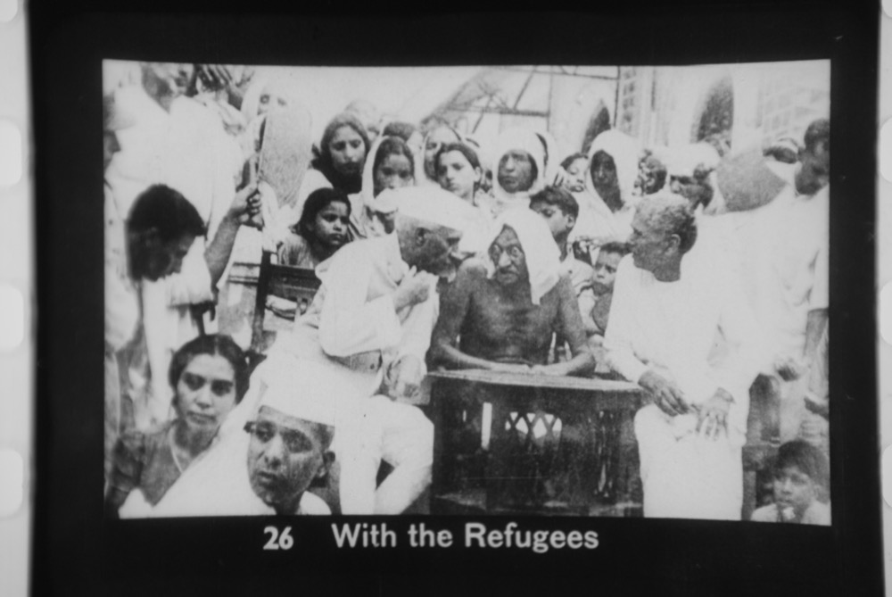
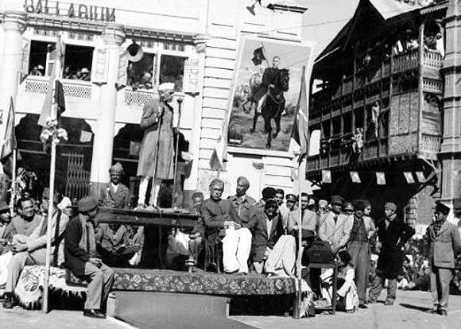

The reading room — study the primary sources
The atlas is built on the record; this is where you can read the record itself. A shelf of public-domain books on India's history and governance, each streamed page-by-page in a real book reader — turn pages, zoom, search the full text, go full-screen. First on the shelf: M.O. Mathai's two memoirs from inside Nehru's office — a contested, first-hand account of the age that shaped modern India's institutions.
How history wrote these books
M.O. Mathai sat in the room where independent India was being invented — as Jawaharlal Nehru's private secretary from 1946 to 1959. To read his memoirs is to read one man's view of the age. Before you turn the pages, walk the years he lived through — the moments the books circle back to again and again — each with a photograph from that exact time. At any step, jump straight to where the book itself is scanned.
A secretary walks into the future PM's office
In 1946, as the Interim Government took shape, M.O. Mathai — a Malayali from Travancore — became private secretary to Jawaharlal Nehru. For the next thirteen years he would handle the appointments, the correspondence, the visitors and the paper of the most powerful office in the new nation. The memoirs are his account of what crossed that desk.

“At the stroke of the midnight hour…”
India became free, and Nehru its first Prime Minister. Mathai was inside the machinery of that transition — the telegrams, the ceremonies, the sleepless nights. His books are studded with the small, human detail of those days that formal histories leave out: who said what in the corridor, which crisis landed on the desk at 2 a.m.

The wound the maps still carry
Freedom came cleaved in two. Partition uprooted some fifteen million people and killed perhaps a million more — the largest mass migration in human history. The new government Mathai served spent its first months not celebrating but managing catastrophe: refugee columns, riots, a divided army and treasury. The lines drawn in 1947 still shape the borders, the disputes and the demographics the atlas maps today.

The accession that never settled
In October 1947 the Maharaja of Kashmir acceded to India as tribal raiders advanced; Nehru, himself of Kashmiri descent, took the question to the United Nations. Mathai watched the decision up close. The line that emerged is the one this atlas draws to India's full claimed boundary — PoK and Aksai Chin included — on the very 3D globe where the states are raised.
Power, proximity — and its price
For twelve years Mathai was one of the most quietly powerful men in Delhi — the gatekeeper to Nehru. In 1959 he resigned amid corruption allegations and an official inquiry. That fall, and the resentment it left, colours everything he later wrote. The books are the testimony of an insider who was pushed out — invaluable and interested at once.
The memoirs that scandalised Delhi
Two decades on, during the brief Janata window after Indira Gandhi's Emergency, Mathai finally published: Reminiscences of the Nehru Age (1978, 49 chapters) and My Days with Nehru (1979). One chapter — number 29, titled simply “She” — was left blank in print, its contents about the Nehru–Gandhi family too explosive to run. “Few books in India,” wrote one critic, “have got such bad reviews.” They remain among the most talked-about, least-trusted memoirs of the age — which is exactly why they're worth reading with your eyes open.
“Long years ago we made a tryst with destiny, and now the time comes when we shall redeem our pledge, not wholly or in full measure, but very substantially.
At the stroke of the midnight hour, when the world sleeps, India will awake to life and freedom. A moment comes, which comes but rarely in history, when we step out from the old to the new, when an age ends, and when the soul of a nation, long suppressed, finds utterance.”
Books are public-domain scans hosted by the Internet Archive (Digital Library of India collection), embedded via the Archive's own BookReader — streamed from Archive.org, not copied here. Titles: Reminiscences of the Nehru Age and My Days with Nehru, both by M.O. Mathai. If a book fails to load, use the "open on Archive.org" link. This reading room is part of the atlas's sources & references effort — the primary record you can read for yourself.